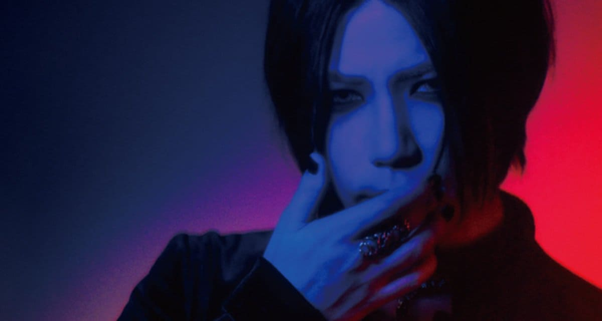

The GazettE anuncia la salida de su guitarrista Aoi
2026-03-09 / Takanori

La banda the GazettE anunció oficialmente la salida de su guitarrista Aoi, informando que el músico ya no formará parte del grupo y que ambas partes continuarán sus caminos por separado.
Según el comunicado publicado por los integrantes, la situación comenzó cuando Aoi se apartó unilateralmente de las actividades de la banda, realizando acciones que terminaron afectando lanzamientos y giras que ya estaban programados. Además, indicaron que hubo comportamientos repetidos que debilitaron la confianza dentro del grupo.
Los miembros explicaron que intentaron comunicarse directamente con el guitarrista en múltiples ocasiones para resolver la situación. Sin embargo, dichas solicitudes fueron rechazadas y la comunicación terminó limitándose a intercambios a través de su representante. El comunicado también señala que durante este periodo quedaron responsabilidades sin cumplirse, se produjeron declaraciones negándose a participar en presentaciones en vivo —algo que, según la banda, afecta directamente la confianza con los fans— y hubo exigencias relacionadas con asuntos financieros que no pudieron aceptar.
Asimismo, los integrantes afirmaron que se difundió externamente información que no coincidía con los hechos, e incluso mencionaron que algunos asuntos relacionados con un miembro fallecido fueron tratados de una manera que consideraron inapropiada. La situación, según explican, terminó generando preocupaciones relacionadas con la confidencialidad.
Pese a esta decisión, la banda aseguró que sus actividades continuarán. También indicaron que revisarán los lanzamientos que ya estaban previstos y que anunciarán más detalles una vez que los nuevos planes estén definidos. Finalmente, los integrantes reafirmaron su compromiso de seguir protegiendo sus actividades y continuar entregando música a todos quienes aman y apoyan a the GazettE.
← Volver al inicio